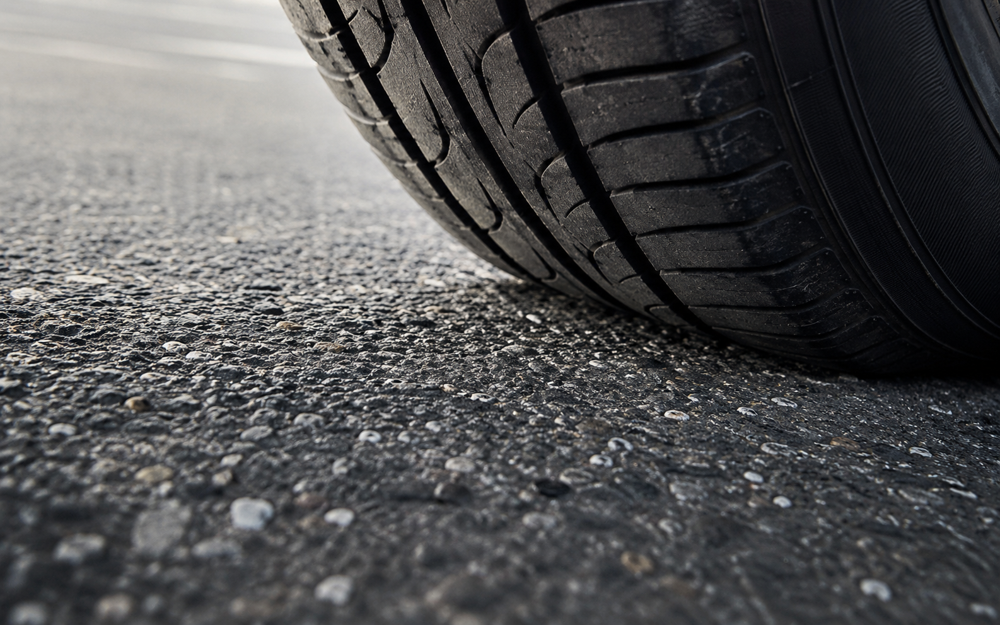
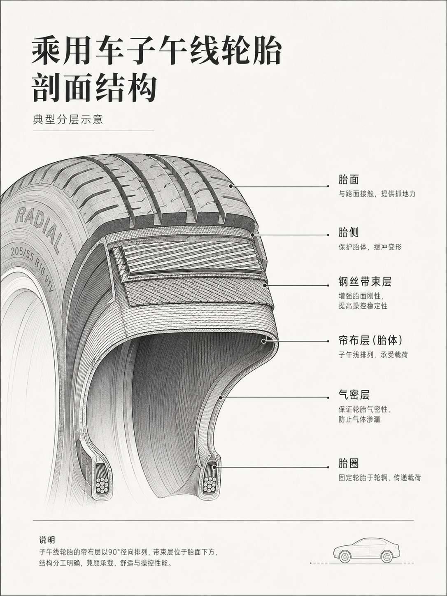
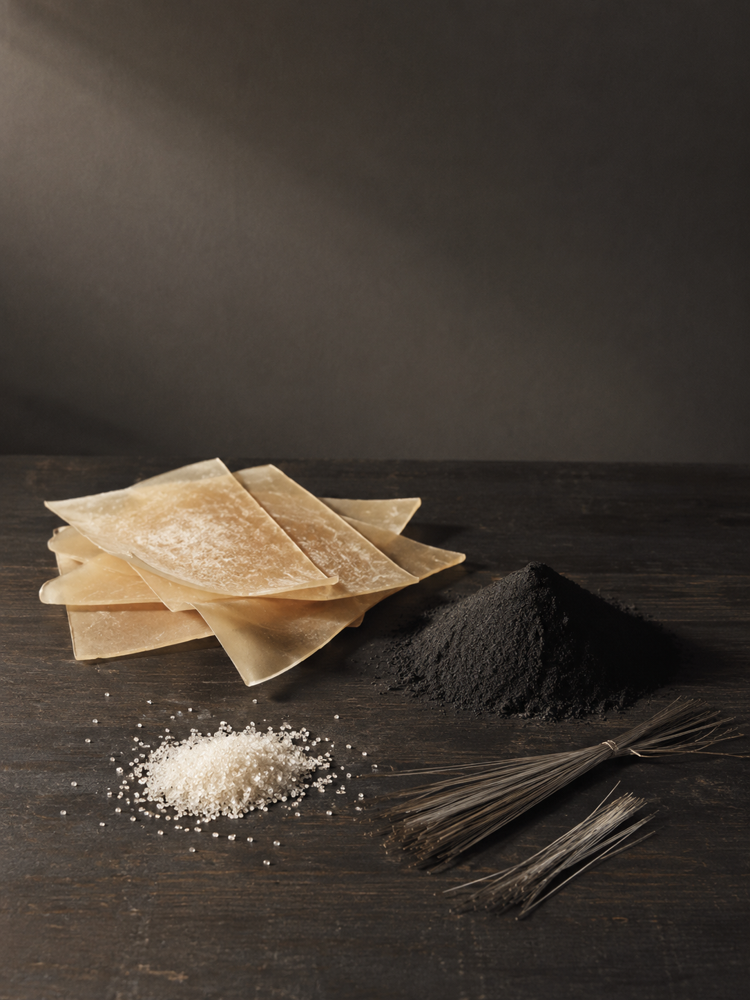
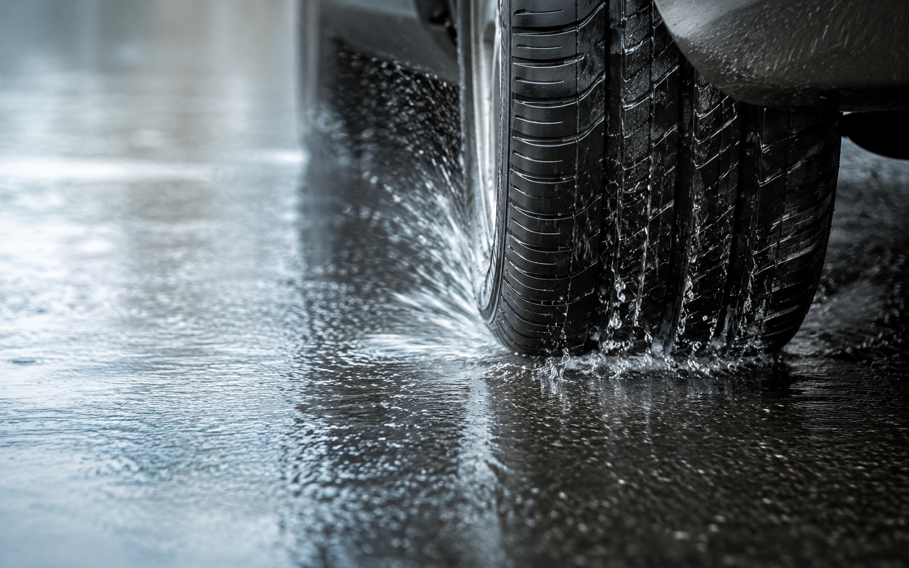
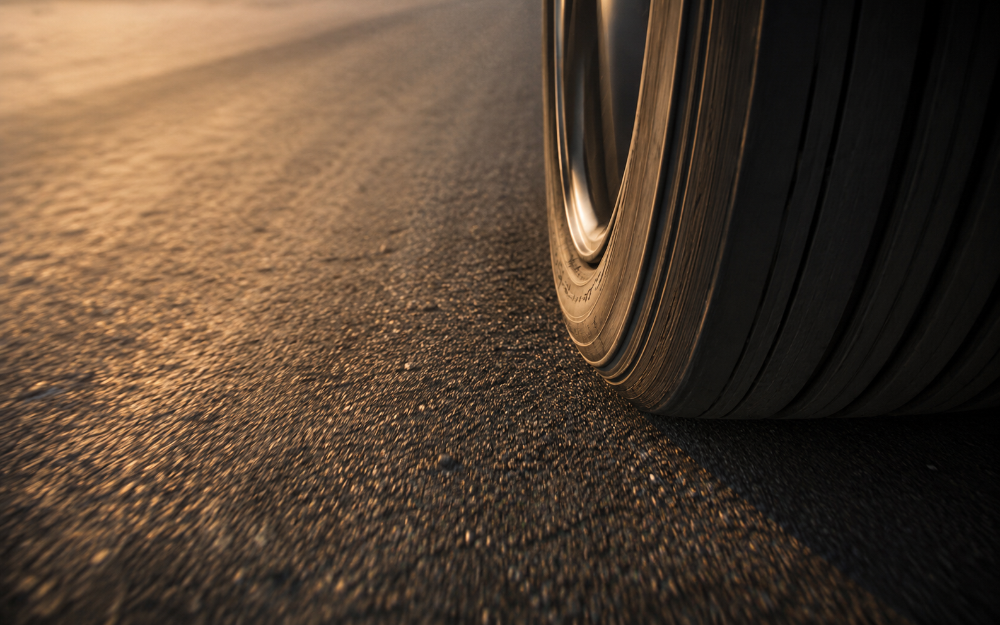
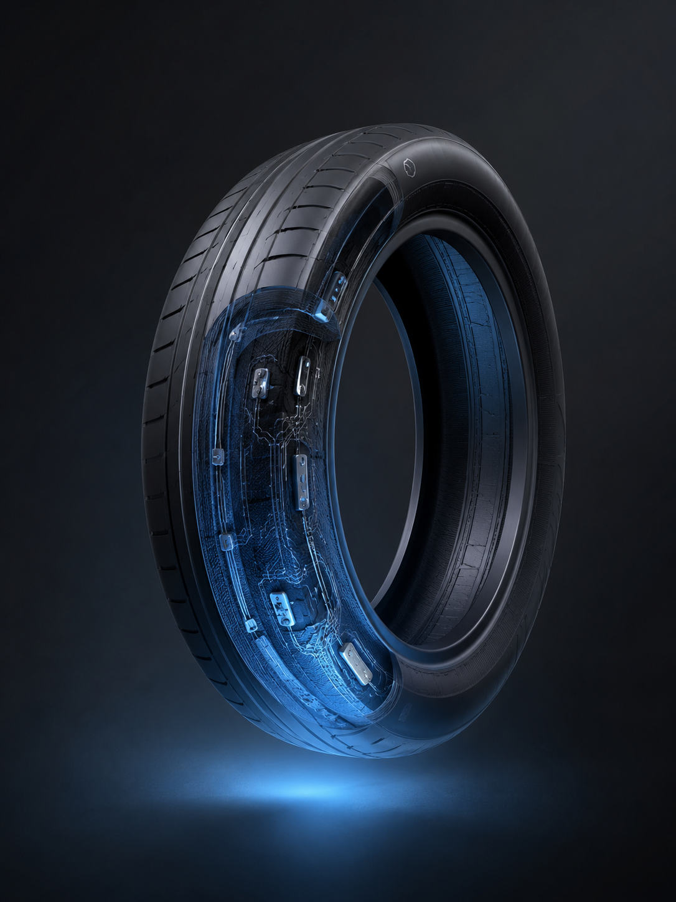

引擎制造速度，轮胎决定速度是否被世界接住。
轮胎不是汽车的附属品，而是安全、操控、舒适、能耗与噪声的共同入口。
每一次加速、刹车、转弯，都不是车身直接完成，而是通过轮胎与地面的接触完成。
汽车所有宏大的性能，最终都必须通过极小的接触区域传递给路面。轮胎，是速度与现实之间的翻译器。

米其林介绍，一条轮胎可使用超过 200 种原材料。
典型乘用车子午线轮胎由 20 多个部件组装，并使用 15 种以上橡胶配方。从胎面到胎侧，从帘布层到钢丝带束层，每一层都有特定的材料配方与工程功能。

轮胎材料包括天然橡胶、合成橡胶、炭黑、二氧化硅、钢丝、织物、抗氧化剂等。
炭黑与二氧化硅能增强橡胶，提高抗撕裂、耐磨与抓地表现；二氧化硅还能改善滚动阻力，在燃油经济性与安全性之间取得平衡。

轮胎花纹的核心作用，是在湿滑路面排水、维持接触、减少打滑。
NHTSA 建议，当胎纹磨损至 2/32 英寸时应更换轮胎。

真正危险的，不是轮胎突然失效，而是它在你最需要它的时候，少给了你几十米。
"Pressure Is Performance"
NHTSA 研究指出，轮胎欠压或胎纹不足会提高事故前轮胎问题出现的可能性。
轮胎每滚动一圈，都在消耗能量。
USTMA 指出，滚动效率会影响车辆燃油经济性；更高滚动效率意味着更低能耗与更少排放。

OECD：电动车因电池重量，非尾气颗粒排放仍可能显著
"Grip Becomes Strategy"
F1 的轮胎不是单纯追求耐用，而是在抓地、温度、磨耗与策略之间寻找极限。
Pirelli 统计，2024 年 F1 赛季使用的轮胎行驶距离几乎接近地球到月球的距离。
在赛道上，轮胎不只是让车跑起来。它决定什么时候进站、什么时候进攻、什么时候必须克制。
更软，抓地更强，却可能磨得更快；更硬，更耐用，却可能牺牲湿地表现。轮胎工程的优雅，在于平衡。
欧盟联合研究中心资料指出，轮胎磨耗对环境的影响远超想象。
未来轮胎会走向低滚阻材料、可持续橡胶、传感器监测、智能胎压、可回收结构。
Continental 称乘用车轮胎最多由约 100 种原材料构成，并正推动更多可再生与回收材料进入配方。

轮胎连接汽车与道路，也连接工程与生命。
它不在车内发光，不在仪表盘上闪耀，却默默决定一次转弯是否稳定，一次刹车是否及时，一段旅程是否安全。